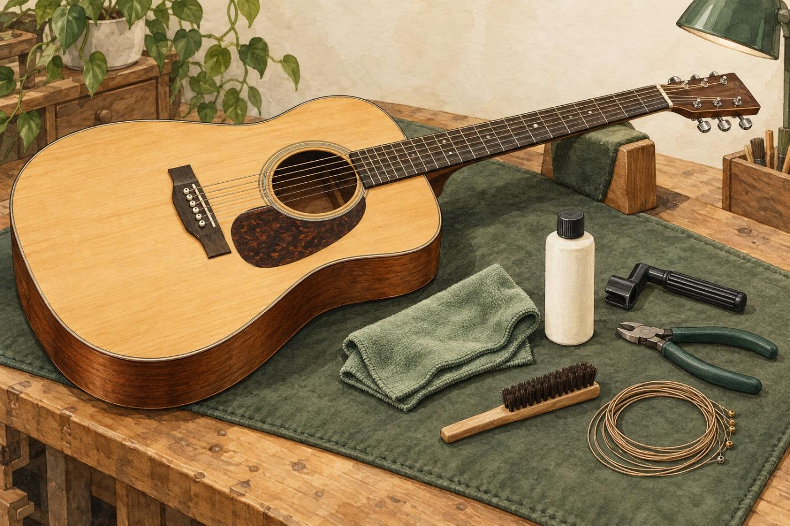
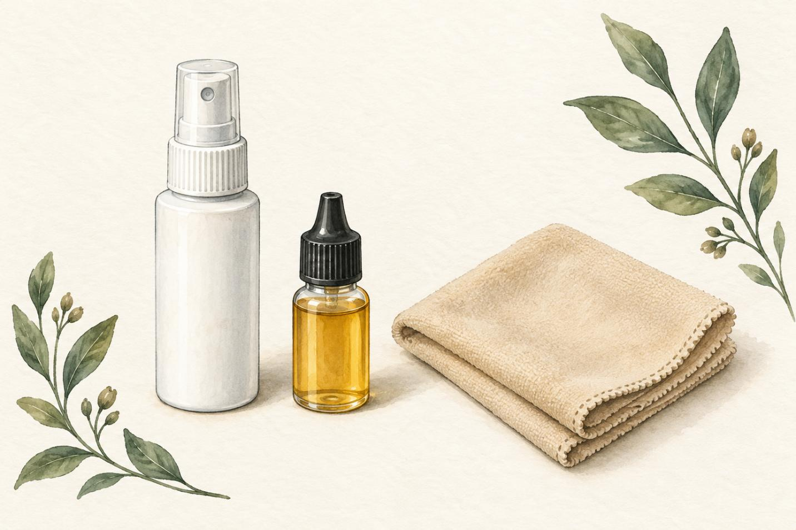
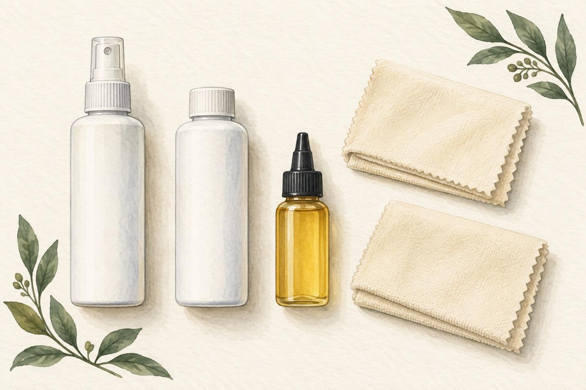
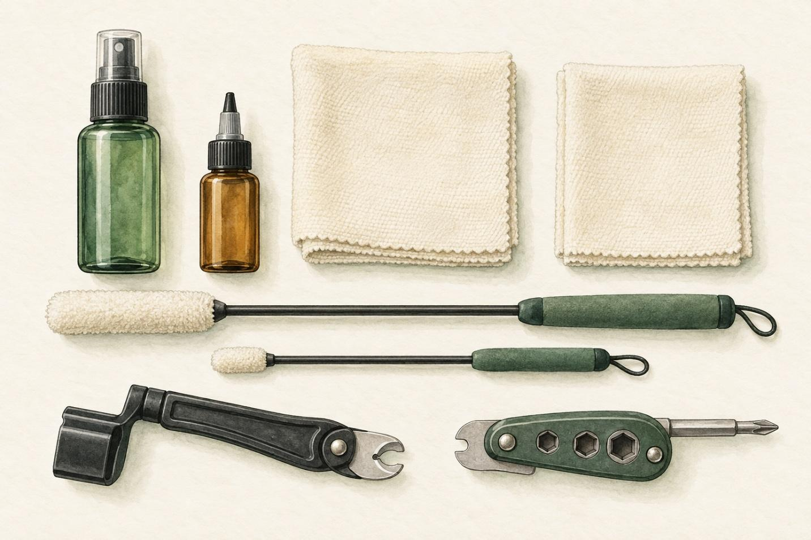

BUYER’S GUIDE
Acoustic Guitar Setup and Maintenance
Hello readers, my name is Suman Pandey, and I am writing a buyer's guide for setting up and maintaining an acoustic guitar.

Owning an acoustic guitar is more than just picking a chord and a song to play. As with any other musical instrument, the guitar also requires knowledge of basic maintenance such as cleaning, changing strings, and more. But beginners do not have to get all the tools they can at once. A good place to start is to select supplies for the maintenance they wish to learn within their budget.
This guide shows you the differences between the three MusicNomad kits: the Premium Guitar Care Kit - 3pc ($13.49), the Premium Guitar Care Kit - 5pc ($29.99), and the MusicNomad Guitar Care Starter Kit - 8pc ($49.99). These products provide a variety of cleaning supplies and maintenance tools. This is just to demonstrate to buyers what they get when they pay more for one brand than another, but it is not necessarily a way of determining which brand is the best.
The rankings are based on ease of use for someone with limited equipment, cost, and compatibility. This is a review based on manufacturers' specifications and public reviews. I have not tested all of these tools by myself. The images shown below are similar to the ones shown on the MusicNomad product listing page.
1. Three-Piece MusicNomad Premium Guitar Care Kit ($13.49)
MN140 · Overall ranking: Second

This comparison shows that the 3-piece Premium Guitar Care Kit is the least expensive. It contains 2 oz. bottle of Guitar ONE cleaner, polish, and wax, a half-ounce bottle of fretboard oil F-ONE, and a microfiber cloth. Guitar ONE is designed for a gloss finish, and F-ONE for an unfinished fretboard. Guitar ONE is not recommended for a satin or matte finish (MusicNomad, “Three-Piece Premium Guitar Care Kit”).
The main advantage of this kit for a beginner is the low initial cost. I would suggest this kit to an absolute beginner who is learning and maintaining a guitar. Starting small and using those tools is better than buying each and every tool without using it.
When a new owner purchases a guitar, they can discover the distinction between taking care of the body and taking care of an unfinished fretboard. These are two different applications, and products cannot be used interchangeably. It is important to become familiar with the guitar's instructions from the manufacturer before buying a new guitar.
The main disadvantage of this kit is the limited scope. This kit does not include tools for changing strings, so anyone planning on doing string changes will have to save for another kit. If you have several guitars, the smaller bottles might not be as attractive to you. However, if the owner is not going to use these frequently, it is not necessarily better to purchase them in larger quantities.
Pros: Cheapest to buy, easiest guitar parts to get, and a good start to the guitar cleaning process.
Cons: No string-changing tool, fewer products, and a few finish limitations may cause the cleaner to be unsuitable for certain instruments.
This kit is my second favorite, as it is lower in the price category and also does not include as many tasks as the 8-piece kit does. It would be my first recommendation for a beginner who only needs cleaning supplies to maintain the guitar, as changing the strings comes much later. I would look at the cost of any tools that I would miss out on if I chose it versus a larger kit before I made my decision to go with it. The best value is not based on the price per item next to one item in the shopping list, but on the entire shopping list.
2. Five-Piece MusicNomad Premium Guitar Care Kit($29.99)
MN108 · Overall ranking: Third

The Premium Guitar Care Kit includes 5 pieces as opposed to 3. It comes with two microfiber towels and a separate Guitar Polish, and also includes Guitar ONE, a fretboard oil, and Guitar Polish for the guitar. Both cleaners and polishes are packaged in 4 oz bottles, and the oil is packaged in a 2 oz bottle. The polish is sold separately, and is designed to clean and polish the gloss finish (MusicNomad, “Five-Piece Premium Guitar Care Kit).
It is convenient to have more cleaning supplies in one purchase. For guitarists who already have maintenance tools, the extra towel and larger bottles might be appreciated. This may also be a good choice for someone who cares for more than one instrument.
For the beginner, however, they should ask themselves if the separate polish is required. It is more important to know when to use a product than to use everything in the package. In such cases, I would determine the guitar finish and the cleaning job I want to do and then start accordingly.
The only negative is that it is more expensive, but it does not include the addition of string-changing equipment. If someone wishes to purchase both cleaning goods and maintenance tools, they will need another purchase. The extra cost is primarily for larger quantities and a more specific cleaning option, as compared to the 3-piece kit. Having that distinction can be crucial in determining whether or not the upgrade is worth it.
Pros: Larger towing, two microfiber towels, and a unique polish for proper applications that require a deposit of gloss.
Cons: Costs more than the basic kit, no string changing tools, and additional cleaning materials that some beginners may not require.
This kit is #3 for the beginning collector who is putting together a first maintenance collection. This role is not a reflection of the need for poor-performing products but rather a reflection of the needs of the audience. A player who already has tools and wants additional cleaning supplies would be a good candidate to prefer it. I would say that if this kit is available with extra materials that would be very useful in addressing a particular issue, then someone should consider it. It is important for buyers to not think that the middle-priced option is the best value for their money. They might be better suited to a smaller kit or larger tool set.
3. Eight-Piece MusicNomad Guitar Care Starter Kit($49.99)
MN299 · Overall ranking: First

In this comparison, the 8-piece Guitar Care Starter Kit encompasses the most. It comprises of two microfiber cloths, a two-piece cleaning tool set, a GRIP ONE string-changing tool, Guitar Detailer, F-ONE fretboard oil, and an Octopus hardware tool. MusicNomad lists the included Guitar Detailer for gloss, satin and matte finishes; F-ONE is for unfinished fretboards (MusicNomad, “Eight-Piece Guitar Care Starter Kit”).
GRIP ONE has particular significance for acoustic players, as it combines a string winder, cutter, and bridge-pin puller. These functions assist in turning tuning pegs, cutting the string ends, and removing the string pins securing strings to the bridge. Preparation for string changes and cleaning makes this kit very useful to someone just starting to learn.
The main advantage of this kit is convenience. For someone who is just beginning with a limited number of materials can buy this equipment for a number of common tasks at once. This is related to the objective of acquiring manageable home maintenance tasks. The buyer does not buy just cleaning liquids; he/she also gets some tools to help him/her with another practical skill.
The drawbacks are the higher price. If the person already has a string winder, cutter, and cleaning cloths, he might not get as much value out of it because some of the contents would be the same. For a player with just an acoustic, some of the features of the hardware tool can be redundant. The buyer should check the package contents against their requirements.
Pros: More tasks can be done, accessories for changing strings, and a skin cleaner for multiple finishes.
Cons: Most expensive purchase, potentially redundant supplies, and tools some owners may not use often.
This kit is the first for a beginner starting from scratch, as it can be used for cleaning and string changing. I would not, however, call it a complete solution for all aspects of acoustic guitar care. A buyer should still make separate plans for tuning, humidity monitoring, and appropriate setup measurements. When there is a match in the contents of this kit and the owner's needs, I believe that this kit provides the best beginning collection from these three options. Its worth is not just because it's the highest item count; it is also because of its useful functions.
Comparison Table
| Feature | Three-Piece Premium Kit | Five-Piece Premium Kit | Eight-Piece Starter Kit |
|---|---|---|---|
| Model | MN140 | MN108 | MN299 |
| Listed price | $13.49 | $29.99 | $49.99 |
| Main purpose | Basic cleaning | Expanded cleaning and polishing | Cleaning and string changes |
| String-changing tools | Not included | Not included | Included |
| Best fit | Buyer with a limited budget | Buyer expanding cleaning supplies | Everything a beginner needs |
| Overall ranking | Second | Third | First |
Final Recommendation
This eight-piece Starter Kit is my first suggestion for the beginner who needs both cleaning supplies and string-changing tools. The Premium Kit in three pieces is a good value for money if the items have the same finish as the guitar. The 5-piece Premium Kit is ideal for those who already have tools and require extra cleaning supplies.
These kits just cover maintenance that is mentioned on this site. Other factors to think about for buyers are the tuning, humidity control, and setup measurement features. A kit does not take the place of knowledge on proper use of its materials and awareness of when to call a professional for assistance.
Check the care instructions on your guitar before ordering, list the supplies you already have, and decide on the next jobs you want to learn. A helpful maintenance collection can steadily be built up as you progress.
Works Cited
MusicNomad. “Premium Guitar Care Kit – 3 pc.” MusicNomad, musicnomadcare.com/shop/guitar-surface-care/premium-guitar-care-kit-3-pc/. Accessed 23 Sept. 2026.
MusicNomad. “Premium Guitar Care Kit – 5 pc.” MusicNomad, musicnomadcare.com/shop/guitar-surface-care/premium-guitar-care-kit-5-pc/. Accessed 23 Sept. 2026.
MusicNomad. “MusicNomad Guitar Care Starter Kit – 8 pc.” MusicNomad, musicnomadcare.com/shop/guitar-surface-care/guitar-care-kit-8-pc/. Accessed 23 Sept. 2026.
OpenAI. Acoustic Guitar Maintenance Kit. AI-generated image, 23 Sept. 2026. ChatGPT.
OpenAI. Conceptual, unbranded illustration of the contents of a MusicNomad MN108 five-piece guitar-care kit. AI-generated image, 23 Sept. 2026. ChatGPT.
OpenAI. Conceptual, unbranded illustration of the contents of a MusicNomad MN140 three-piece guitar-care kit. AI-generated image, 23 Sept. 2026. ChatGPT.
OpenAI. Unbranded illustration of the contents of a MusicNomad MN299 eight-piece guitar-care kit. AI-generated image, 23 Sept. 2026. ChatGPT.